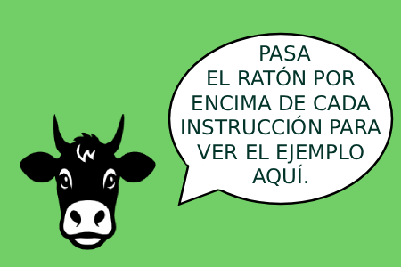

| Acción | Instrucción |
|---|---|
| 🎯 Objetivo | Encuentra todas las vacas escondidas en el tablero. |
| 🐮 Pista inicial | Al comenzar, encontrarás una vaca descubierta que te servirá de pista. |
| 🖱️ Marcar vaca | Haz clic izquierdo en una casilla para marcar una vaca. |
| 🗺️ Regiones | Utiliza las regiones del tablero para deducir dónde están las vacas, solo puede haber una por región. |
| 🔄 Filas/Columnas | No puede haber una vaca en la misma fila ni columna que otra |
| 🚪 Adyacentes | Tampoco puede haber vacas juntas en ninguna casilla adyacente a otra vaca. Márcalas todas. |
| 🚫 Descartar | Haz clic derecho para marcar una casilla como descartada. |
| ❤️ Vidas | Tienes tres vidas. Si marcas una casilla incorrecta, perderás una vida. |
| 🏆 Victoria | Encuentra y marca todas las vacas para ganar la partida. |

Pasa el ratón por encima de una instrucción para ver su ejemplo.